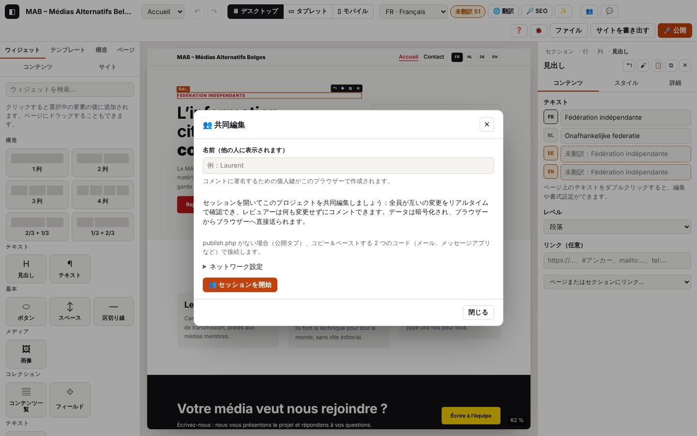

10. 共同編集

このページの内容
以下のログ抜粋はフランス語で記録したものです。コードとレベルはどの言語でも同じです（実際のログのメッセージは表示言語で出ます）。
複数の人が、それぞれ自分のブラウザーで、同じプロジェクトをリアルタイムに編集できます。セッションを開く人（ホスト）が招待リンクを送り、ほかの人はそのリンクから 編集者（すべて変更できる）または レビュアー（コメントのみ。第 11 章を参照）として参加します。データは ブラウザーからブラウザーへ直接（WebRTC、暗号化）送られます。publish.php は接続の仲介に使う メッセージボックス の役割だけを担い、メッセージは暗号化され、15 分後に削除されます。publish.php がない場合は、2 つの コードをコピー＆貼り付け して接続します。
ログのドメイン
collab.*：セッション（ホスト、招待、参加、退出、再開）、確認済みの本人情報、プロジェクトの同期、プレゼンス（誰がどこにいるか）、拒否。rtc.*：2 つのブラウザー間の WebRTC 直接接続（交換したネットワークアドレス、ICE の状態、データチャネル）。IP アドレスは記録しません。記録するのはアドレスの 種類（host、srflx、relay）だけです。signal.*：接続の仲介（publish.php のメッセージボックス、手動のコード、STUN 設定）。php.signal.*：サーバー側で publish.php がこれらのメッセージをどう処理したか（第 8 章を参照）。- 関連：
store.remote（受信した変更の適用）、versions.*／version.*（参加前の安全バージョン）、storage.secret-*（デバイスに保存する個人鍵とセッションの状態）。
ログに決して書かれないもの：セッションの鍵（リンクの #join=… の部分は伏せられます）、招待リンクの全体、接続コード（長さ chars のみ）、IP アドレス、メッセージの内容。ルームの ID（room）は 8 文字に短縮されます。fp は個人の公開フィンガープリント（16 文字）で、秘密情報ではありません。
「collaboration」コンテキスト：コピーしたログ（🐞 →「ログをコピー」）は collaboration : {…} という行で始まります。この行には、あなたの役割、セッションの状態、接続の仲介方法（メッセージボックスかコード）、STUN サーバー、確認済みの参加者数、そして WebRTC の各リンクについて、その状態（ice、connexion、collecte、canal）、ローカルとリモートのアドレスの種類、使用中のネットワーク経路（paire）が含まれます。接続がうまくいかないときは、まずここを見てください。
10.1 セッションを開く（ホスト）
目的：ほかの人が参加できるよう、自分のプロジェクトでセッションを開きます。
手順
- （推奨）「公開」タブ →「OVH」で、publish.php（バージョン 4）のアドレスを入力します。入力しない場合は、コードで接続することになります（10.4）。
- 上部のバーの 👥 をクリックします。
- 自分の名前（ほかの人に表示されます）を入力します。このブラウザーに個人鍵が作成され、本人であることの証明とコメントの署名に使われます。
- 「👥 セッションを開始」 をクリックします。
画面の表示：「セッションを開始しました：招待リンクを送ってください。」、2 つのリンク（編集者用とレビュアー用）、「コードで接続（サーバーなし）」の欄、「参加者（0）」の一覧が表示されます。👥 ボタンがアクティブになります。
想定されるログ（journaux/collab-heberger.log）
技術的な詳細：想定されるログ
05:08:26.254 +1.02s INFO collab.open Fenêtre « Travailler à plusieurs » {"state":"aucune session","peers":0,"identity":false,"publish":"oui"}
…
05:08:26.285 +1.05s INFO collab.identity.new Clé personnelle créée pour Kudoro {"fp":"IY4BOSk6K6wwsZ8i","did":"did:key:zDnaeypUHJMzxeWa"}
…
05:08:26.343 +1.11s INFO collab.host.start [collab.host#1] Ouverture d’une session de collaboration {"name":"Kudoro","fp":"IY4BOSk6K6wwsZ8i","resume":false}
…
05:08:26.355 +1.12s DEBUG signal.check Boîte aux lettres disponible (publish.php version 4) {"url":"http://127.0.0.1:8864/publish.php","version":"4","req":"c43a38c1"}
05:08:26.355 +1.12s INFO collab.host.signal [collab.host#1 · 12 ms] Mise en relation par la boîte aux lettres de publish.php {"via":"boîte aux lettres","url":"http://127.0.0.1:8864/publish.php"}
05:08:26.356 +1.12s INFO signal.host En attente des invités dans la boîte aux lettres de publish.php {"room":"b0d6c15c","peer":"caf096d817f96803","url":"http://127.0.0.1:8864/publish.php"}
05:08:26.356 +1.12s DEBUG signal.start Relève de la boîte aux lettres toutes les 2 s {"room":"b0d6c15c","peer":"caf096d817f96803","every":2000}
05:08:26.358 +1.12s DEBUG collab.invite.create Liens d’invitation créés (éditeur et relecteur, valables 7 jours) {"roles":["editor","reviewer"],"days":7,"via":"boîte aux lettres","chars":661}
05:08:26.358 +1.12s INFO collab.host.ok [collab.host#1 · 15 ms] Session ouverte : envoie un lien d’invitation {"room":"b0d6c15c","peer":"caf096d817f96803","docId":"doc_a20a22aa6f5e49c0","via":"boîte aux lettres","stun":"aucun"}確認ポイント：collab.host.start → signal.check（publish.php が応答し、バージョンを返す）→ collab.host.signal「メッセージボックスで接続」→ signal.host → collab.host.ok。via はゲストがあなたを見つける方法、stun は使用する STUN サーバーです（テストでは同じマシン上で動かすため「aucun」＝なし）。
バリエーション
| 状況 | 画面の変化 | ログ |
|---|---|---|
| 「公開」に publish.php のアドレスがない | 「コードで接続（サーバーなし）」の欄が開いている | collab.host.signal「publish.php のアドレスがありません（公開タブ）：コードで接続します」、collab.host.ok {"via":"codes"} |
publish.php が古く、メッセージボックスがない（応答に "signal":true が含まれない） | 同上：コード | signal.unsupported（WARN）{"why":"trop ancien","version":"2"}、続いて collab.host.signal「publish.php はメッセージボックスとして機能しません」（抜粋：journaux/collab-heberger-codes.log） |
| publish.php に接続できない（アドレスの誤り、ホスティングの障害、オフライン） | 同上：コード | net.fail（ERROR）、続いて signal.unsupported（WARN）{"why":"injoignable"} |
| アドレスは応答するが JSON ではない（エラーページ、PHP が実行されていない） | 同上：コード | signal.unsupported（WARN）{"why":"pas du JSON","status":…} |
| このブラウザーに個人鍵がすでにある | 新しい鍵は作成されない | collab.identity.new の代わりに collab.identity.load（DEBUG）。名前を変えた場合は collab.identity.rename（INFO） |
| セッションが開いているのに、もう一度「開始」をクリックした | 何も変わらない | collab.host.already（DEBUG） |
| セッション中にページを再読み込みした | 「セッションが中断されました…」と「セッションを再開」 | 起動時：collab.restore（INFO）。クリック時：collab.resume.start … collab.resume.ok「セッションを再開しました：ゲストは同じリンクで再接続できます」 |
エラー
| 状況 | 表示されるメッセージ | ログ | 対処 |
|---|---|---|---|
| 名前をまだ入力していない | 「先に名前を入力してください。」 | collab.no-identity（WARN） | 名前を入力してから「開始」 |
| 保存されている個人鍵を読み取れない | （なし）新しい鍵が作成される | collab.identity.invalid（WARN） | 何もしなくてかまいません。以前のコメントは古い鍵で署名されたままです |
| デバイスのストレージを使えない（厳格なプライベートブラウズ） | （なし） | collab.identity.unreadable、collab.identity.unsaved、collab.save-fail（WARN） | セッションは動きますが、再読み込みすると続きません |
| 開始時の予期しないエラー | エラーのメッセージ | エラー内容付きの collab.host.fail（ERROR） | ログを送ってください |
10.2 人を招待する（招待リンク）
目的：適切な役割で、相手がセッションに参加できるようにします。
手順：👥 で、「✎ 編集者として招待」または「💬 レビュアーとして招待」の横にある 「コピー」 をクリックし、リンクを送ります（メール、メッセージアプリ）。
画面の表示：「リンクをコピーしました。」
想定されるログ（journaux/collab-inviter.log）
技術的な詳細：想定されるログ
05:08:26.420 +1.18s INFO collab.invite.copy Lien d’invitation copié {"what":"data-copy-editor"}リンクそのものは決して記録されません。セッション開始時（10.1）の collab.invite.create が、リンクが存在すること、どの役割向けか、何日有効かを示します。
バリエーション
| 状況 | 変化 | ログ |
|---|---|---|
| ブラウザーがクリップボードへのアクセスを拒否した | 「リンクを選択しました：コピーしてください（Ctrl+C）。」 | collab.invite.copy-fail（WARN） |
覚えておくこと：リンクの有効期間は 7 日 で、セッションの鍵を含んでいます。リンクは あなたのブラウザー をホストとして指定します。セッションを終了して（10.8）新しいセッションを開いた場合は、新しい リンクを送り直す必要があります。
10.3 リンクでセッションに参加する
目的：受け取ったリンクを開き、ホストのプロジェクトで作業します。
手順
- ブラウザー（最新の Chrome、Edge、Firefox）でリンクを開きます。
- 「👥 セッションに参加」ウィンドウに、誰が何のために招待しているかが表示されます。自分の名前 を入力します。
- 「参加」 をクリックします。
画面の表示：「直接接続しています…」、続いて「Kudoro からプロジェクトを受信しました。」と表示されます。ホストのプロジェクトがあなたのプロジェクトに置き換わります（あなたのプロジェクトは先にバージョンに保存されます）。上部にホストのバッジが表示されます。
ゲスト側の想定されるログ（journaux/collab-rejoindre-lien-invite.log）
技術的な詳細：想定されるログ
05:08:27.140 +0.07s INFO collab.join.link Lien d’invitation ouvert
…
05:08:27.404 +0.33s INFO collab.invite.open Invitation de Kudoro : éditeur {"role":"editor","owner":"Kudoro","ownerFp":"IY4BOSk6K6wwsZ8i","via":"boîte aux lettres","signal":"http://127.0.0.1:8864/publish.php","hours":168}
…
05:08:27.595 +0.52s INFO collab.identity.new Clé personnelle créée pour Ana {"fp":"Auvgw65qxQJFT3tl","did":"did:key:zDnaesex9gYkMWiC"}
05:08:27.599 +0.53s INFO collab.join.start [collab.join#1] Rejoindre une session {"name":"Ana","fp":"Auvgw65qxQJFT3tl","via":"boîte aux lettres"}
05:08:27.600 +0.53s DEBUG collab.join.invite [collab.join#1 · 1 ms] Invitation valable : Kudoro invite comme éditeur {"role":"editor","owner":"Kudoro","host":"caf096d817f96803","signal":"http://127.0.0.1:8864/publish.php","hours":168}
…
05:08:27.607 +0.53s DEBUG collab.join.backup [collab.join#1 · 8 ms] Projet actuel enregistré dans les versions avant de recevoir celui de l’hôte
05:08:27.608 +0.54s INFO rtc.join.start [rtc.join#1] Connexion à l’hôte caf096d817f96803 par la boîte aux lettres {"host":"caf096d817f96803","url":"http://127.0.0.1:8864/publish.php","room":"b0d6c15c"}
05:08:27.612 +0.54s DEBUG rtc.pc.create Connexion WebRTC créée (côté demande) {"side":"offer","label":"caf096d817f96803","stun":"aucun (réseau local seulement)"}
05:08:27.620 +0.55s DEBUG rtc.join.offer [rtc.join#1 · 12 ms] Demande de connexion créée : collecte des adresses réseau
…
05:08:31.620 +4.55s DEBUG rtc.ice.gather-timeout Collecte des adresses non terminée après 4 s : envoi des 1 adresse(s) trouvée(s) {"label":"caf096d817f96803","ms":4001,"local":{"host":1,"srflx":0,"relay":0,"prflx":0},"stun":"aucun"}
05:08:31.621 +4.55s INFO rtc.ice.no-stun Aucun serveur STUN : seules les adresses locales sont proposées (même réseau seulement) {"label":"caf096d817f96803"}
05:08:31.622 +4.55s DEBUG signal.post Dépôt d’un message chiffré « offer » pour caf096d817f96803 {"room":"b0d6c15c","from":"5ce63b23a9932966","to":"caf096d817f96803","t":"offer","bytes":922}
…
05:08:31.636 +4.56s INFO rtc.join.sent [rtc.join#1 · 4028 ms] Demande déposée dans la boîte aux lettres : en attente de la réponse de l’hôte {"local":{"host":1,"srflx":0,"relay":0,"prflx":0}}
05:08:31.636 +4.56s DEBUG signal.start Relève de la boîte aux lettres toutes les 1 s {"room":"b0d6c15c","peer":"5ce63b23a9932966","every":1000}
05:08:32.399 +5.33s DEBUG rtc.pc.state Connexion : établissement (ICE puis chiffrement DTLS) {"label":"caf096d817f96803","state":"connecting","ms":4787}
05:08:32.400 +5.33s DEBUG rtc.ice.state ICE : essai des chemins réseau entre les deux navigateurs {"label":"caf096d817f96803","state":"checking","ms":4788}
05:08:32.650 +5.58s DEBUG signal.receive 1 message(s) relevé(s) dans la boîte aux lettres {"room":"b0d6c15c","count":1,"from":["caf096d817f96803"]}
05:08:32.652 +5.58s DEBUG signal.stop Relève de la boîte aux lettres arrêtée {"room":"b0d6c15c","polls":2,"received":1}
05:08:32.654 +5.58s DEBUG rtc.ice.remote Adresses reçues de l’autre navigateur : 1 host {"label":"caf096d817f96803","type":"answer","remote":{"host":1,"srflx":0,"relay":0,"prflx":0}}
05:08:32.655 +5.58s INFO rtc.join.answer [rtc.join#1 · 5047 ms] Réponse de l’hôte reçue : ouverture du canal… {"remote":{"host":1,"srflx":0,"relay":0,"prflx":0}}
…
05:08:32.662 +5.59s INFO rtc.pair Chemin réseau utilisé : host ↔ host (udp) {"label":"caf096d817f96803","local":"host","remote":"host","protocol":"udp","rttMs":1,"ms":5049}
05:08:32.663 +5.59s INFO rtc.channel.open Canal de données ouvert avec caf096d817f96803 {"label":"caf096d817f96803","ms":5050}
05:08:32.663 +5.59s INFO rtc.join.ok [rtc.join#1 · 5055 ms] Liaison directe prête avec l’hôte {"ms":5051}
05:08:32.663 +5.59s DEBUG collab.link.new Nouveau lien : présentation (invité) {"label":"caf096d817f96803","links":1}
05:08:32.666 +5.59s INFO collab.join.ok [collab.join#1 · 5067 ms] Connecté·e à l’hôte : vérification des identités puis réception du projet {"role":"editor","room":"b0d6c15c"}
05:08:32.679 +5.61s DEBUG collab.hello Présentation de l’hôte Kudoro : c’est bien la personne qui a signé l’invitation {"name":"Kudoro","fp":"IY4BOSk6K6wwsZ8i","role":"owner"}
05:08:32.681 +5.61s INFO collab.auth Identité vérifiée : Kudoro (hôte) {"name":"Kudoro","fp":"IY4BOSk6K6wwsZ8i","role":"owner","peers":1}
05:08:32.683 +5.61s DEBUG collab.sync.ask Demande du projet à l’hôte {"docId":null,"known":0}
…
05:08:32.687 +5.61s INFO collab.snapshot Projet reçu de Kudoro {"docId":"doc_a20a22aa6f5e49c0","pages":2,"comments":0}ホスト側の想定されるログ（journaux/collab-rejoindre-lien-hote.log）
技術的な詳細：想定されるログ
05:08:32.389 +7.15s DEBUG signal.receive 1 message(s) relevé(s) dans la boîte aux lettres {"room":"b0d6c15c","count":1,"from":["5ce63b23a9932966"]}
05:08:32.390 +7.15s INFO rtc.accept.start [rtc.accept#1] Demande de connexion reçue de 5ce63b23a9932966 {"from":"5ce63b23a9932966","via":"boîte aux lettres"}
05:08:32.393 +7.16s DEBUG rtc.pc.create Connexion WebRTC créée (côté réponse) {"side":"answer","label":"5ce63b23a9932966","stun":"aucun (réseau local seulement)"}
05:08:32.395 +7.16s DEBUG rtc.ice.remote Adresses reçues de l’autre navigateur : 1 host {"label":"5ce63b23a9932966","type":"offer","remote":{"host":1,"srflx":0,"relay":0,"prflx":0}}
05:08:32.397 +7.16s DEBUG rtc.accept.answer [rtc.accept#1 · 7 ms] Réponse créée : collecte des adresses réseau
05:08:32.397 +7.16s DEBUG rtc.ice.gathering Collecte des candidats : gathering {"label":"5ce63b23a9932966","state":"gathering","local":{"host":0,"srflx":0,"relay":0,"prflx":0}}
…
05:08:32.399 +7.16s DEBUG rtc.pc.state Connexion : établissement (ICE puis chiffrement DTLS) {"label":"5ce63b23a9932966","state":"connecting","ms":7}
…
05:08:32.403 +7.17s DEBUG rtc.ice.gathered Candidats trouvés : 1 host, 0 srflx, 0 relay {"label":"5ce63b23a9932966","ms":6,"local":{"host":1,"srflx":0,"relay":0,"prflx":0},"stun":"aucun"}
…
05:08:32.404 +7.17s DEBUG signal.post Dépôt d’un message chiffré « answer » pour 5ce63b23a9932966 {"room":"b0d6c15c","from":"caf096d817f96803","to":"5ce63b23a9932966","t":"answer","bytes":922}
…
05:08:32.412 +7.17s DEBUG php.signal.post Message chiffré déposé {"room":"b0d6c15c","from":"caf096d817f96803","to":"5ce63b23a9932966","bytes":922,"id":2,"new_room":false,"req":"dc4fb13f","srvMs":0.4}
…
05:08:32.412 +7.17s INFO rtc.accept.sent [rtc.accept#1 · 22 ms] Réponse déposée dans la boîte aux lettres : ouverture du canal… {"local":{"host":1,"srflx":0,"relay":0,"prflx":0}}
…
05:08:32.661 +7.42s INFO rtc.pair Chemin réseau utilisé : host ↔ host (udp) {"label":"5ce63b23a9932966","local":"host","remote":"host","protocol":"udp","rttMs":1,"ms":269}
05:08:32.665 +7.43s INFO rtc.channel.open Canal de données ouvert avec 5ce63b23a9932966 {"label":"5ce63b23a9932966","ms":272}
05:08:32.667 +7.43s INFO rtc.accept.ok [rtc.accept#1 · 277 ms] Liaison directe prête avec 5ce63b23a9932966 {"ms":274}
05:08:32.668 +7.43s DEBUG collab.link.new Nouveau lien : présentation (hôte) {"label":"5ce63b23a9932966","links":1}
05:08:32.672 +7.43s DEBUG collab.hello Présentation de Ana : invitation valable (éditeur, expire dans 168 h) {"name":"Ana","fp":"Auvgw65qxQJFT3tl","role":"editor"}
05:08:32.681 +7.44s INFO collab.auth Identité vérifiée : Ana (éditeur) {"name":"Ana","fp":"Auvgw65qxQJFT3tl","role":"editor","peers":1}
05:08:32.684 +7.45s INFO collab.sync.snapshot Envoi du projet complet à Ana {"name":"Ana","why":"nouveau participant","pages":2,"kb":12}
05:08:32.685 +7.45s DEBUG collab.presence Présence de Ana {"fp":"Auvgw65qxQJFT3tl","page":"p_l3wjjz84","selected":null}確認ポイント（順番に）：
- 接続の仲介（
signal.*）：ゲストが要求を投函し（signal.post「offer」、rtc.join.sent）、ホストがそれを受け取って（signal.receive）応答し（rtc.accept.sent）、ゲストが応答を受け取ります（rtc.join.answer）。 - 直接接続（
rtc.*）：rtc.ice.state「checking」から「connected」、rtc.pc.state「確立・暗号化済み」、rtc.pair（選ばれたネットワーク経路）、rtc.channel.open、続いてrtc.join.ok／rtc.accept.ok。 - 本人確認（
collab.*）：collab.hello（ホストは招待を確認し、ゲストはホストが招待に署名した本人であることを確認）、双方でcollab.auth。 - プロジェクト：
collab.sync.ask→collab.sync.snapshot（ホスト）→collab.snapshot（ゲスト）。
rtc.join.* の各段階の ms を見ると、どこで時間がかかっているかがわかります：アドレスの収集（最大 4 秒）、応答待ち（1〜2 秒ごとに確認）、チャネルを開く処理（数百 ms）。
バリエーション
| 状況 | 画面の変化 | ログ |
|---|---|---|
| レビュアーとしての招待 | 「… があなたをサイトのレビューとコメントに招待しています」、レビューモード | collab.readonly（INFO）。第 11 章を参照 |
| このデバイスでこのセッションに参加したことがある | 安全バージョンは作られず、プロジェクトも再コピーされない | collab.join.backup の代わりに collab.join.resume（INFO）、続いて collab.sync.ask「見逃した変更を要求（再開）」 |
| STUN サーバーあり（既定の設定）で、異なる 2 つのネットワーク | — | srflx ≥ 1 の rtc.ice.gathered。rtc.pair は srflx ↔ srflx（または host ↔ srflx） |
| メッセージボックスに古いメッセージが残っている | — | signal.ignored（DEBUG）「pas la réponse attendue」（期待した応答ではない）：影響はありません |
| リンクが途中で切れている、または壊れている（コピーが不完全） | 何も開かない | collab.join.bad-link（WARN） |
エラー：10.9（拒否された招待）と 10.11（接続が確立しない）も参照してください。
| 状況 | 表示されるメッセージ | ログ | 対処 |
|---|---|---|---|
| 名前が空 | 「名前を入力してください。」 | collab.join.no-name（WARN） | 名前を入力してください |
| ホストが応答しない（セッション終了、ホストのタブが閉じている、またはスリープ中） | 「接続に失敗しました：応答がありません：相手側でセッションはまだ開いていますか？」（30 秒後） | signal.no-answer（WARN）、続いて rtc.join.fail、collab.join.fail（ERROR） | ホストにタブを開いたままにしてもらうか、新しいリンクを依頼してください |
| メッセージボックスに接続できない | 「接続に失敗しました：メッセージボックスに接続できません（Failed to fetch）」 | signal.post-fail（WARN）、rtc.join.fail（ERROR）— 10.11 を参照 |
10.4 コードで参加する（サーバーなし）
目的：publish.php がない（または古すぎる）ときに接続します。2 つのブラウザーは、別の手段（メール、メッセージアプリ）で 2 つのコードを交換します。
手順
- ゲストがリンクを開き、名前を入力して 「参加」 をクリックすると、接続コード が表示されます（「1. このコードを … に送ってください」）。ゲストはそれをホストに送ります。
- ホストはそれを 👥 →「コードで接続（サーバーなし）」に貼り付けて 「応答コードを作成」 をクリックし、応答コード をゲストに送り返します。
- ゲストは応答コードを貼り付け（「2. 受け取った応答コードをここに貼り付けてください」）→ 「接続」 をクリックします。
画面の表示：ゲスト側に「接続しました：プロジェクトを受信中…」、続いてホストのプロジェクトが表示されます。
ゲスト側の想定されるログ（journaux/collab-codes-invite.log）
技術的な詳細：想定されるログ
05:09:07.869 +0.30s INFO collab.invite.open Invitation de Hôte manuel : relecteur {"role":"reviewer","owner":"Hôte manuel","ownerFp":"k6QfSYzzwQjiOdj2","via":"codes","hours":168}
…
05:09:07.973 +0.40s INFO collab.join.start [collab.join#1] Rejoindre une session {"name":"Relecteur manuel","fp":"3JKupVQgZWXUILKU","via":"codes"}
05:09:07.974 +0.40s DEBUG collab.join.invite [collab.join#1 · 1 ms] Invitation valable : Hôte manuel invite comme relecteur {"role":"reviewer","owner":"Hôte manuel","host":"fc0a98bbb7bd44e5","signal":"aucune (codes)","hours":168}
…
05:09:07.982 +0.41s INFO collab.join.ok [collab.join#1 · 9 ms] Session prête : échange de codes à faire {"role":"reviewer","room":"91f52fc6"}
05:09:07.982 +0.41s INFO rtc.manual-offer.start [rtc.manual-offer#1] Création du code de connexion (sans serveur) {"peer":"3c70f862c9c47449"}
05:09:07.987 +0.42s DEBUG rtc.pc.create Connexion WebRTC créée (côté demande) {"side":"offer","label":"manuel","stun":"aucun (réseau local seulement)"}
…
05:09:12.003 +4.43s DEBUG rtc.ice.gather-timeout Collecte des adresses non terminée après 4 s : envoi des 1 adresse(s) trouvée(s) {"label":"manuel","ms":4000,"local":{"host":1,"srflx":0,"relay":0,"prflx":0},"stun":"aucun"}
…
05:09:12.012 +4.44s INFO rtc.manual-offer.ok [rtc.manual-offer#1 · 4030 ms] Code de connexion prêt : à envoyer à l’hôte {"chars":932,"local":{"host":1,"srflx":0,"relay":0,"prflx":0}}
…
05:09:12.489 +4.92s INFO rtc.manual-finish.start [rtc.manual-finish#1] Connexion avec le code de réponse reçu {"chars":932}
…
05:09:12.556 +4.99s INFO rtc.manual-finish.start [rtc.manual-finish#2] Connexion avec le code de réponse reçu {"chars":896}
05:09:12.569 +5.00s DEBUG rtc.ice.remote Adresses reçues de l’autre navigateur : 1 host {"label":"manuel","type":"answer","remote":{"host":1,"srflx":0,"relay":0,"prflx":0}}
05:09:12.570 +5.00s INFO rtc.manual-finish.remote [rtc.manual-finish#2 · 14 ms] Code de réponse accepté : ouverture du canal… {"remote":{"host":1,"srflx":0,"relay":0,"prflx":0}}
…
05:09:12.571 +5.00s INFO rtc.channel.open Canal de données ouvert avec manuel {"label":"manuel","ms":4584}
05:09:12.571 +5.00s INFO rtc.manual-finish.ok [rtc.manual-finish#2 · 15 ms] Liaison directe prête avec l’hôte {"ms":4584}
…
05:09:12.575 +5.00s DEBUG collab.hello Présentation de l’hôte Hôte manuel : c’est bien la personne qui a signé l’invitation {"name":"Hôte manuel","fp":"k6QfSYzzwQjiOdj2","role":"owner"}
…
05:09:12.579 +5.01s INFO collab.auth Identité vérifiée : Hôte manuel (hôte) {"name":"Hôte manuel","fp":"k6QfSYzzwQjiOdj2","role":"owner","peers":1}
05:09:12.581 +5.01s DEBUG collab.sync.ask Demande du projet à l’hôte {"docId":null,"known":0}
…
05:09:12.591 +5.02s INFO collab.snapshot Projet reçu de Hôte manuel {"docId":"doc_fbff36c9667737fa","pages":2,"comments":0}（この抜粋の最初の試行 rtc.manual-finish#1 は、下の表にある「間違ったコード」のエラーです。）
ホスト側の想定されるログ（journaux/collab-codes-hote.log）
技術的な詳細：想定されるログ
05:09:12.394 +5.82s INFO rtc.manual-answer.start [rtc.manual-answer#2] Code de connexion reçu : création du code de réponse {"chars":932}
05:09:12.399 +5.82s DEBUG rtc.pc.create Connexion WebRTC créée (côté réponse) {"side":"answer","label":"3c70f862c9c47449","stun":"aucun (réseau local seulement)"}
05:09:12.400 +5.83s INFO rtc.accept.start [rtc.accept#1] Demande de connexion par code de 3c70f862c9c47449 {"from":"3c70f862c9c47449","via":"codes"}
05:09:12.407 +5.83s DEBUG rtc.ice.remote Adresses reçues de l’autre navigateur : 1 host {"label":"3c70f862c9c47449","type":"offer","remote":{"host":1,"srflx":0,"relay":0,"prflx":0}}
…
05:09:12.427 +5.85s DEBUG rtc.ice.state ICE : essai des chemins réseau entre les deux navigateurs {"label":"3c70f862c9c47449","state":"checking","ms":29}
05:09:12.428 +5.85s DEBUG rtc.pc.state Connexion : établissement (ICE puis chiffrement DTLS) {"label":"3c70f862c9c47449","state":"connecting","ms":29}
05:09:12.429 +5.85s INFO rtc.ice.state ICE : un chemin réseau fonctionne {"label":"3c70f862c9c47449","state":"connected","ms":30}
…
05:09:12.430 +5.86s DEBUG rtc.ice.gathered Candidats trouvés : 1 host, 0 srflx, 0 relay {"label":"3c70f862c9c47449","ms":19,"local":{"host":1,"srflx":0,"relay":0,"prflx":0},"stun":"aucun"}
…
05:09:12.431 +5.86s INFO rtc.manual-answer.ok [rtc.manual-answer#2 · 37 ms] Code de réponse prêt : à renvoyer à l’invité {"chars":896,"local":{"host":1,"srflx":0,"relay":0,"prflx":0}}
05:09:12.565 +5.99s INFO rtc.pc.state Connexion : établie et chiffrée {"label":"3c70f862c9c47449","state":"connected","ms":166}
05:09:12.566 +5.99s INFO rtc.pair Chemin réseau utilisé : host ↔ host (udp) {"label":"3c70f862c9c47449","local":"host","remote":"host","protocol":"udp","rttMs":1,"ms":167}
05:09:12.567 +5.99s INFO rtc.channel.open Canal de données ouvert avec 3c70f862c9c47449 {"label":"3c70f862c9c47449","ms":169}
05:09:12.568 +5.99s INFO rtc.accept.ok [rtc.accept#1 · 168 ms] Liaison directe prête avec 3c70f862c9c47449 {"ms":169}確認ポイント：rtc.manual-offer.ok（コードの準備完了、chars ≈ 900）、rtc.manual-answer.ok（応答の準備完了）、続いて rtc.manual-finish.ok と rtc.accept.ok。その後は 10.3 と同じ流れです（collab.auth、collab.snapshot）。collab.join の流れはすぐに終わります（「セッションの準備完了：コードを交換してください」）。接続そのものは rtc.manual-* で追跡します。
エラー
| 状況 | 表示されるメッセージ | ログ | 対処 |
|---|---|---|---|
| コードが不完全（コピーが途中で切れた）または変更されている | ホスト：「コードを認識できません：読み取れないコードです：不完全、変更された、または別のセッション用に作成されたものです」 | signal.code-invalid（WARN）{"chars":80}、続いて rtc.manual-answer.fail（ERROR）（journaux/collab-codes-incomplet.log） | コードを 全部 コピーし直してください（コードは約 900 文字あります） |
| 別のセッションのコード | 同上 | 同上 | この招待のコードを使ってください |
| ゲストが応答コードではなく自分のコードを貼り付けた | 「失敗：このコードはこのセッションの応答ではありません。」 | signal.code-wrong（WARN）{"got":"offer","expected":"answer"}、続いて rtc.manual-finish.fail（journaux/collab-codes-mauvais.log） | ホストから受け取った コードを貼り付けてください |
| ホストが接続要求ではなく応答コードを貼り付けた | 「コードを認識できません：このコードはこのセッションの接続要求ではありません。」 | signal.code-wrong（WARN）、rtc.manual-answer.fail | ゲストから受け取ったコードを貼り付けてください |
| コードは正しいが接続が開かない | 「失敗：直接接続できませんでした…」（20 秒） | 原因付きの rtc.channel.timeout（WARN）、rtc.manual-finish.fail。ホスト側では 3 分後に rtc.accept.fail | 10.11 を参照。コードはメッセージボックスの代わりになるだけで、インターネットのルーター越えの代わりには なりません |
rtc.manual-cancel（INFO）は、プログラムが中止したコードによる接続を記録します。
10.5 ほかの人の作業場所を見る（プレゼンス）
目的：誰がいて、どの要素で作業しているかを知ります。
手順：何もする必要はありません。参加者のバッジが上部に表示されます。バッジをクリックすると、その人が作業している場所に移動します。
画面の表示：その人が選択している要素の周りに、その人の色の枠と名前が表示されます。インスペクターには「✎ Ana も … で作業しています」と表示されます。
想定されるログ（ホスト側、Ana が見出しを選択したとき。journaux/collab-presence.log）
技術的な詳細：想定されるログ
05:08:33.752 +8.52s DEBUG collab.presence Présence de Ana {"fp":"Auvgw65qxQJFT3tl","page":"p_hlwzd6p4","selected":"n_5b6g691i2o"}page と selected がその人の居場所を示します。選択やページが変わるたびに collab.presence が 1 行出ます（DEBUG）。
10.6 一緒に編集する
目的：それぞれの変更がほかの人に届き、相手の変更を上書きしないようにします。
手順：いつもどおり編集します。元に戻す（Ctrl+Z）で取り消されるのは 自分の 変更だけです。
画面の表示：ほかの人のページが 1 秒以内に更新されます。
変更した人の想定されるログ（journaux/collab-modification-hote.log）
技術的な詳細：想定されるログ
05:08:33.929 +8.69s DEBUG store.commit Modification {"key":"n_5b6g691i2o:text:fr","source":"inspector","past":3,"page":"p_hlwzd6p4"}
05:08:33.935 +8.70s DEBUG collab.ops.out 1 modification(s) envoyée(s) à 1 participant(s) {"n":1,"to":1}… ほかの人の側（journaux/collab-modification-invite.log）
技術的な詳細：想定されるログ
05:08:33.937 +6.86s DEBUG collab.ops.in 1 modification(s) de Kudoro appliquée(s) {"name":"Kudoro","received":1,"applied":1}
05:08:33.939 +6.87s DEBUG store.remote Modifications d’un autre participant appliquées {"ops":1,"history":0}
05:08:33.945 +6.87s DEBUG canvas.render Canevas mis à jour sans rechargement (en-tête, contenu, pied, styles) {"source":"remote","mode":"contenu","ms":4}n は操作の数、to はそれを受け取る確認済みの参加者の数です。ホスト側では、ゲストの変更がほかの参加者に中継されます（collab.ops.relay、TRACE）。
バリエーション
| 状況 | ログ |
|---|---|
| 2 人が同じフィールドを同時に変更した | すべての人のところで新しいほうが勝ちます。変更が負けた側では collab.ops.in「…（1 件は既知または古いもの）」 |
| 編集中のフィールドがほかの人によって変更された | inspector.remote-deferred：フィールドから離れたときにインスペクターが再描画されます |
| プロジェクトより先に変更が届いた（再開の途中） | collab.ops.early（DEBUG）：無視されますが、再開時にあらためて届きます |
エラー
| 状況 | 表示されるメッセージ | ログ | 対処 |
|---|---|---|---|
| レビュアー（またはプログラム）が変更を送った | ホスト：「変更を拒否しました（Laurent、レビュアー）：…」 | ホスト側で collab.ops.rejected（WARN）、送信側で collab.remote-error — 第 11 章を参照 | レビュアーなら正常な動作です |
| メッセージが壊れている、または別のバージョンの Atelier から来た | （なし） | rtc.recv.invalid、collab.message-invalid（WARN）、collab.message-unknown（DEBUG） | 双方の Atelier を更新してください |
| メッセージの適用中のエラー（バグ） | 「共同編集：…」 | スタック付きの collab.message-fail（ERROR） | 双方のログを送ってください |
10.7 オフラインになってから戻る
目的：接続が切れても（タブを閉じた、パソコンがスリープした、ネットワークが切れた）作業を続け、あとですべてを統合します。
手順
- そのまま編集を続けます。変更は保持され、記録されます。
- 再開するには、招待リンクを開き直します（ゲスト）。ホストは再読み込みのあと、👥 →「セッションを再開」 をクリックします。
画面の表示：再接続すると、あなたの変更がほかの人に届き、ほかの人の変更があなたに届きます。
ゲストが離れたときのホスト側の想定されるログ（journaux/collab-depart-hote.log）
技術的な詳細：想定されるログ
05:08:50.343 +25.11s WARN rtc.ice.state ICE : chemin réseau perdu (coupure, veille, changement de réseau) ; WebRTC réessaie {"label":"5ce63b23a9932966","state":"disconnected","ms":17950}
05:08:50.344 +25.11s WARN rtc.pc.state Connexion : interrompue, tentative de reprise {"label":"5ce63b23a9932966","state":"disconnected","ms":17951}
05:08:50.344 +25.11s INFO rtc.channel.close Canal de données fermé avec 5ce63b23a9932966 {"label":"5ce63b23a9932966","pc":"disconnected","ice":"disconnected","sent":14,"received":7}
05:08:50.345 +25.11s INFO collab.link.closed Lien fermé avec Ana {"name":"Ana","fp":"Auvgw65qxQJFT3tl","role":"editor","authed":true,"left":1}
05:08:50.345 +25.11s INFO collab.peer.leave Ana a quitté la session {"fp":"Auvgw65qxQJFT3tl","role":"editor"}戻ってきたゲストの側（journaux/collab-hors-ligne-retour.log）
技術的な詳細：想定されるログ
05:08:50.830 +0.13s DEBUG collab.identity.load Clé personnelle chargée : Ana {"fp":"Auvgw65qxQJFT3tl"}
05:08:50.832 +0.13s INFO collab.restore Session interrompue retrouvée (éditeur) : rouvre le lien d’invitation pour te reconnecter {"role":"editor","docId":"doc_a20a22aa6f5e49c0","host":"Kudoro","via":"boîte aux lettres"}
…
05:08:51.448 +0.74s DEBUG store.commit Modification {"key":"n_2h541z3c37:label:fr","source":"inspector","past":1,"page":"p_hlwzd6p4"}
05:08:51.456 +0.75s DEBUG collab.ops.out 1 modification(s) envoyée(s) à 0 participant(s) {"n":1,"to":0}
05:08:52.368 +1.67s INFO collab.join.link Lien d’invitation ouvert
…
05:08:52.437 +1.73s INFO collab.join.start [collab.join#1] Rejoindre une session {"name":"Ana","fp":"Auvgw65qxQJFT3tl","via":"boîte aux lettres"}
…
05:08:52.439 +1.74s INFO collab.join.rejoin [collab.join#1 · 2 ms] Même session qu’avant : reconnexion, les modifications faites entre-temps seront fusionnées {"docId":"doc_a20a22aa6f5e49c0"}
05:08:52.440 +1.74s INFO rtc.join.start [rtc.join#1] Connexion à l’hôte caf096d817f96803 par la boîte aux lettres {"host":"caf096d817f96803","url":"http://127.0.0.1:8864/publish.php","room":"b0d6c15c"}
…
05:08:56.471 +5.77s INFO rtc.join.sent [rtc.join#1 · 4031 ms] Demande déposée dans la boîte aux lettres : en attente de la réponse de l’hôte {"local":{"host":1,"srflx":0,"relay":0,"prflx":0}}
…
05:08:56.479 +5.78s DEBUG signal.ignored Message « answer » ignoré (pas la réponse attendue) {"from":"caf096d817f96803","t":"answer"}
…
05:08:57.490 +6.79s INFO rtc.join.answer [rtc.join#1 · 5050 ms] Réponse de l’hôte reçue : ouverture du canal… {"remote":{"host":1,"srflx":0,"relay":0,"prflx":0}}
…
05:08:57.499 +6.80s INFO rtc.join.ok [rtc.join#1 · 5059 ms] Liaison directe prête avec l’hôte {"ms":5053}
…
05:08:57.503 +6.80s INFO collab.join.ok [collab.join#1 · 5066 ms] Reconnecté·e : vérification des identités puis reprise {"role":"editor"}
…
05:08:57.516 +6.81s INFO collab.auth Identité vérifiée : Kudoro (hôte) {"name":"Kudoro","fp":"IY4BOSk6K6wwsZ8i","role":"owner","peers":1}
05:08:57.518 +6.82s DEBUG collab.sync.ask Demande des modifications manquées (reprise) {"docId":"doc_a20a22aa6f5e49c0","known":2}
05:08:57.542 +6.84s DEBUG collab.ops.in 4 modification(s) de Kudoro appliquée(s) {"name":"Kudoro","received":4,"applied":4,"review":4}
…
05:08:57.555 +6.85s INFO review.remote Commentaire reçu de Laurent {"id":"cm_e_pChwMPXbaY","fp":"7ylCE0KoKaMHlDzu","page":"p_hlwzd6p4","node":"n_21063j4e5p"}
05:08:57.556 +6.85s INFO collab.sync.merged Reprise : 4 modification(s) reçue(s), 1 envoyée(s) à l’hôte {"in":4,"out":1}ホスト側（journaux/collab-hors-ligne-hote.log）
技術的な詳細：想定されるログ
05:08:56.559 +31.32s INFO rtc.accept.start [rtc.accept#3] Demande de connexion reçue de 5ce63b23a9932966 {"from":"5ce63b23a9932966","via":"boîte aux lettres"}
…
05:08:57.501 +32.26s INFO rtc.accept.ok [rtc.accept#3 · 942 ms] Liaison directe prête avec 5ce63b23a9932966 {"ms":940}
…
05:08:57.513 +32.28s INFO collab.auth Identité vérifiée : Ana (éditeur) {"name":"Ana","fp":"Auvgw65qxQJFT3tl","role":"editor","peers":2}
05:08:57.523 +32.29s INFO collab.sync.delta Reprise de Ana : 4 modification(s) manquée(s) envoyée(s) {"name":"Ana","ops":4}
05:08:57.563 +32.33s DEBUG collab.ops.in 1 modification(s) de Ana appliquée(s) {"name":"Ana","received":1,"applied":1}確認ポイント：起動時の collab.restore（セッションが見つかった）、切断中の collab.ops.out「… à 0 participant(s)」（参加者 0 人に送信）、collab.join.rejoin、続いて collab.sync.delta（ホスト：ゲストが見逃した変更）と collab.sync.merged（ゲスト：受信／送信）。
バリエーション
| 状況 | 変化 | ログ |
|---|---|---|
| 短い切断（Wi-Fi が一瞬切れた） | ネットワークがすぐ戻れば何も起きない | rtc.ice.state「disconnected」（WARN）、続いて「connected」（INFO） |
| ゲストのタブが閉じられた | 数秒後にホスト側でバッジが消える | rtc.ice.state「disconnected」、rtc.channel.close、collab.link.closed、collab.peer.leave。20〜30 秒後に rtc.lost（INFO） |
| ゲストがホストとの接続を失った | 「ホストとの接続が中断されました。招待リンクを開き直して…」 | collab.host-lost（WARN） |
| ブラウザーがオフラインになった | — | app.offline（WARN）、続いて app.online（INFO） |
| 再読み込み後の再開だが、個人鍵が失われている | 再開できない | collab.restore-no-identity（WARN） |
| 保存されたセッションの状態を読み取れない | 再開できない | collab.restore-unreadable または collab.restore-fail（WARN） |
10.8 セッションから退出する・セッションを終了する
目的：接続を切る（ゲスト）か、全員のセッションを終了します（ホスト）。
手順：👥 →「セッションから退出」（ゲスト）または 「セッションを終了」（ホスト）。
画面の表示：「セッションから退出しました。」／「セッションを終了しました。」と表示され、バッジが消えます。ホストが終了したあとは、以前のリンクは使えなくなります。
想定されるログ（ゲストが退出する場合）（journaux/collab-quitter.log）
技術的な詳細：想定されるログ
05:08:58.356 +7.65s INFO storage.secret-write Secret gardé sur cet appareil (jamais dans le projet) {"name":"collab-session"}
…
05:08:58.552 +7.85s INFO collab.open Fenêtre « Travailler à plusieurs » {"state":"editor","peers":1,"identity":true,"publish":"oui"}
…
05:08:58.608 +7.91s INFO collab.leave Session quittée {"role":"editor","peers":1,"room":"b0d6c15c"}
05:08:58.608 +7.91s DEBUG collab.node.close Fermeture de 1 lien(s) {"links":1}
…
05:08:58.642 +7.94s INFO rtc.channel.close Canal de données fermé avec caf096d817f96803 {"label":"caf096d817f96803","pc":"closed","ice":"closed","sent":6,"received":6}ホストが終了する場合（journaux/collab-fermer.log）
技術的な詳細：想定されるログ
05:09:56.289 +91.05s INFO collab.leave Session fermée par l’hôte {"role":"owner","peers":1,"room":"b0d6c15c"}
05:09:56.290 +91.05s DEBUG signal.stop Relève de la boîte aux lettres arrêtée {"room":"b0d6c15c","polls":45,"received":4}
05:09:56.290 +91.05s DEBUG collab.node.close Fermeture de 1 lien(s) {"links":1}
…
05:09:56.317 +91.08s INFO rtc.channel.close Canal de données fermé avec f8f466bc22c8391f {"label":"f8f466bc22c8391f","pc":"closed","ice":"closed","sent":12,"received":10}signal.stop は、セッション中にメッセージボックスを確認した回数（polls）と受信したメッセージ数を示します。ゲスト側では rtc.channel.close、続いて collab.host-lost が出ます。
10.9 拒否される招待（破損、期限切れ、偽造）
目的：リンクが拒否される理由を理解します。招待はすべてホストの鍵で 署名 されています。招待を書き換えることも、他人のセッション用に招待を作ることもできません。
画面の表示：「セッションに参加」で、説明の代わりにエラーメッセージが表示され、「参加」 ボタンが無効になります。
想定されるログ（journaux/collab-invitation-invalide.log：壊れたリンク、続いて期限切れのリンク）
技術的な詳細：想定されるログ
05:08:59.542 +0.38s INFO collab.join.link Lien d’invitation ouvert
…
05:08:59.545 +0.38s WARN collab.invite.invalid Invitation refusée : Signature de l’invitation invalide. {"reason":"Signature de l’invitation invalide."}
…
05:08:59.644 +0.48s WARN collab.invite.invalid Invitation refusée : Invitation expirée : demandez un nouveau lien. {"reason":"Invitation expirée : demandez un nouveau lien."}偽造されたリンク（別の鍵で署名され、セッションの鍵は正しいもの）：ブラウザー内の確認は通りますが、ホストが拒否します。ホスト側（journaux/collab-invitation-falsifiee-hote.log）：
技術的な詳細：想定されるログ
05:09:04.860 +39.62s INFO rtc.accept.ok [rtc.accept#4 · 256 ms] Liaison directe prête avec 0ee363a37b8fc4bd {"ms":255}
…
05:09:04.866 +39.63s WARN collab.refused.owner Invitation de Faussaire refusée : signée par une autre clé que celle de l’hôte (lien falsifié ou d’une autre session) {"name":"Faussaire","fp":"8LokG_rg9pxAbkhj","signer":"HN1kxpRtekQIIImT","signerName":"Faussaire"}
…
05:09:04.877 +39.64s WARN collab.remote-error L’autre côté signale : Hôte inconnu : ce n’est pas la personne qui a envoyé l’invitation. {"from":"0ee363a37b8fc4bd","message":"Hôte inconnu : ce n’est pas la personne qui a envoyé l’invitation."}ゲスト側（journaux/collab-invitation-falsifiee-invite.log）：
技術的な詳細：想定されるログ
05:08:59.695 +0.53s INFO collab.invite.open Invitation de Faussaire : éditeur {"role":"editor","owner":"Faussaire","ownerFp":"HN1kxpRtekQIIImT","via":"boîte aux lettres","signal":"http://127.0.0.1:8864/publish.php","hours":168}
…
05:09:04.862 +5.70s INFO rtc.join.ok [rtc.join#1 · 5076 ms] Liaison directe prête avec l’hôte {"ms":5070}
…
05:09:04.866 +5.71s INFO collab.join.ok [collab.join#1 · 5089 ms] Connecté·e à l’hôte : vérification des identités puis réception du projet {"role":"editor","room":"b0d6c15c"}
05:09:04.868 +5.71s WARN collab.refused.host Hôte inconnu : Kudoro n’est pas la personne qui a signé l’invitation (Faussaire) {"name":"Kudoro","fp":"IY4BOSk6K6wwsZ8i","expected":"HN1kxpRtekQIIImT"}
…
05:09:04.886 +5.72s WARN collab.remote-error L’autre côté signale : Invitation refusée : elle n’a pas été créée par cette session. {"from":"caf096d817f96803","message":"Invitation refusée : elle n’a pas été créée par cette session."}直接接続は確立します（rtc.join.ok）。リンクを閉じるのは本人確認（collab.refused.*）です。
エラー
| 状況 | 表示されるメッセージ | ログ | 対処 |
|---|---|---|---|
| リンクが壊れている（文字が変わった、途中で切れた） | 「招待の署名が無効です。」または「招待を読み取れません。」 | collab.invite.invalid（WARN）reason | リンクを全部コピーし直してください |
| 7 日より古いリンク | 「招待の有効期限が切れています：新しいリンクを依頼してください。」 | collab.invite.invalid（WARN） | 新しいリンクを依頼してください |
| 別のセッションのリンク（セッションの鍵が違う） | 「別のセッションへの招待です。」 | collab.invite.invalid（WARN） | 正しいリンクを依頼してください |
| 偽造されたリンク、またはホストの古いセッションのリンク | ホスト：「招待を拒否しました：このセッションで作成されたものではありません。」、ゲスト：「不明なホスト：…」 | ホスト：collab.refused.owner（WARN）、ゲスト：collab.refused.host（WARN）と collab.remote-error | このリンクは使わないでください。ホストが新しいリンクを送ります |
| ホストが招待を拒否した（その間に期限が切れた など） | 「招待を拒否しました（Ana）：…」 | collab.refused.invite（WARN） | 新しいリンク |
| 公開鍵とフィンガープリントが一致しない | 「無効な ID です：接続を拒否しました。」 | collab.refused.identity（WARN） | Atelier のバージョン違い、または不正の試み |
| 本人確認の証明が無効 | 「本人確認の証明が無効です：接続を拒否しました。」 | collab.refused.auth（WARN） | 同上 |
| 相手が自己紹介に応答しない（15 秒） | （なし） | collab.hello.timeout（WARN） | Atelier のバージョンが違います：更新してください |
内部の詳細：collab.hello.retry、collab.hello.again、collab.auth.early（TRACE）は自己紹介の流れを追跡します。collab.send-fail と collab.close-fail（WARN）は、すでに閉じたリンクに拒否を伝えられなかったことを記録します。collab.snapshot-refused（WARN）は、ホストではない参加者からプロジェクト全体を受け取ったこと（無視）を記録します。
10.10 ネットワークを設定する（STUN サーバー）
目的：STUN サーバーを選びます。STUN サーバーは、各ブラウザーが自分の公開アドレスを見つけ、インターネットのルーターを越えられるようにします。
手順：👥（セッションを開いていない状態）→ 「ネットワーク設定」 →「STUN サーバー」フィールド。既定値は stun:stun.l.google.com:19302 です。空にするとローカルネットワークのみになります。複数のアドレスはスペースで区切ります。
想定されるログ（journaux/collab-stun-regle.log）
技術的な詳細：想定されるログ
05:09:19.758 +0.43s INFO signal.stun Serveur STUN réglé : 1 adresse(s) valable(s) {"stun":"stun:127.0.0.1:9 turn:relais.exemple.be:3478","valid":["stun:127.0.0.1:9"],"ignored":["turn:relais.exemple.be:3478"]}次に接続するとき、rtc.pc.create に使用するサーバー（stun）が表示されます。
バリエーションとエラー
| 状況 | ログ | 対処 |
|---|---|---|
| フィールドを空にした | signal.stun「STUN サーバーを空にしました：同じローカルネットワーク上でのみ接続できます」。接続のたびに rtc.ice.no-stun（INFO） | 離れた 2 つの家の間で作業するには、既定値に戻してください |
turn: のアドレス、または書き間違い | ignored 付きの signal.stun、続いて rtc.stun-ignored（WARN）「対応しているのは「stun:ホスト:ポート」形式のサーバーのみです（TURN は未対応）」 | 10.11 の「TURN サーバーが必要なのはどんなとき？」を参照 |
| ストレージを使えない | signal.stun-unreadable、signal.stun-unsaved（WARN） | 既定の設定が使われます |
10.11 接続が確立しないときの診断
「参加」が失敗したり止まったままになったりしたら、双方でもう一度試し、ホスト側とゲスト側の両方で ログをコピーして（🐞 →「ログをコピー」）、2 つとも送ってください。先頭の collaboration : {…} の行に、各リンクの状態（liens）が出ています。
接続の 3 つの段階
- 接続の仲介（
signal.*）：2 つのブラウザーが、自分のネットワークアドレスを記した「要求」と「応答」を、publish.php のメッセージボックス（またはコード）を通じて交換します。ここで失敗すると、ほかには何も試されません。 - 直接接続（
rtc.*）：各ブラウザーが相手のアドレスを試し（ICE）、接続を暗号化して（DTLS）、データチャネル を開きます。 - 本人確認（
collab.*）：招待、署名、役割。ここで拒否されるのはネットワークの問題では ありません（10.9 を参照）。
signal.* を読む：メッセージボックス
| 行 | 意味 |
|---|---|
signal.check（DEBUG） | publish.php が応答し、メッセージボックスとして使える（バージョン） |
signal.host／signal.start | ホスト（またはゲスト）が 2 秒（1 秒）ごとにメッセージボックスを確認する。各確認は TRACE（signal.poll、net.request） |
signal.post | 暗号化されたメッセージを投函した（t = offer または answer、bytes）。サーバー側では php.signal.post |
signal.receive | メッセージを受け取った。それぞれについて signal.decrypt（TRACE） |
signal.ignored、signal.duplicate | 関係のないメッセージ（古い、処理済み）：影響はありません |
signal.no-answer（WARN） | ゲストが 30 秒以内に応答を受け取れなかった：ホストのタブが閉じている、スリープ中、またはリンクが古いセッションのもの |
signal.post-fail（WARN） | 投函できない：publish.php が停止、移動、またはオフライン |
signal.post-refused（WARN） | publish.php がメッセージを拒否した（status 400：無効、413：大きすぎる、429：セッションが多すぎる）。サーバー側では php.signal.invalid、php.signal.too-big、php.signal.full |
signal.poll-fail（WARN） | 確認に失敗した（最初の失敗時と、その後 10 回ごと）。その間は signal.poll-retry（TRACE）、回復すると signal.recovered（INFO） |
signal.not-json（WARN） | 応答が JSON ではない：ホスティングのエラーページ、PHP が実行されていない |
signal.decrypt-fail（WARN） | セッションの鍵でメッセージを復号できない：別のセッション、リンクが変更されている |
signal.handle-fail（ERROR） | 復号したメッセージを処理できなかった（バグ） |
signal.unsupported（WARN） | セッション開始時：メッセージボックスがない（why：接続できない、JSON ではない、古すぎる）→ コード |
例：招待を送ったあとで publish.php が停止した 場合。ゲスト側（journaux/collab-boite-injoignable.log）：
技術的な詳細：想定されるログ
05:09:14.817 +0.47s INFO rtc.join.start [rtc.join#1] Connexion à l’hôte 22f2325e97fc0ca4 par la boîte aux lettres {"host":"22f2325e97fc0ca4","url":"http://127.0.0.1:8964/publish.php","room":"abd801f6"}
05:09:14.828 +0.48s DEBUG rtc.join.offer [rtc.join#1 · 11 ms] Demande de connexion créée : collecte des adresses réseau
05:09:18.830 +4.49s DEBUG signal.post Dépôt d’un message chiffré « offer » pour 22f2325e97fc0ca4 {"room":"abd801f6","from":"dd853837fd8f5383","to":"22f2325e97fc0ca4","t":"offer","bytes":919}
…
05:09:18.834 +4.49s ERROR net.fail POST 127.0.0.1:8964/publish.php : Failed to fetch (réseau, CORS ou adresse injoignable) {"id":1,"url":"http://127.0.0.1:8964/publish.php?atelier_debug=1","ms":3,"online":true,"error":{"name":"TypeError","message":"Failed to fetch","stack":"TypeError: Failed to fetch\nat atelierFetch (http://localhost:8791/editor/log.js:181:21)\nat Mailbox.post (http://localhost:8791/editor/collab-ne…
05:09:18.834 +4.49s WARN signal.post-fail Boîte aux lettres injoignable : publish.php arrêté ou déplacé, hors ligne, ou requête bloquée (Failed to fetch) {"url":"http://127.0.0.1:8964/publish.php","t":"offer","online":true,"error":{"name":"TypeError","message":"Failed to fetch","stack":"TypeError: Failed to fetch\nat atelierFetch (http://localhost:8791/editor/log.js:181:21)\nat Mailbox.post (http://localhost:8791/ed…
05:09:18.835 +4.49s ERROR rtc.join.fail [rtc.join#1 · 4018 ms] boîte aux lettres injoignable (Failed to fetch) {"label":"22f2325e97fc0ca4","ice":"new","pc":"new","gathering":"gathering","local":{"host":1,"srflx":0,"relay":0,"prflx":0},"remote":null,"stun":[],"ms":4014,"error":{"name":"Error","message":"boîte aux lettres injoignable (Failed to fetch)","stack":"Error: boîte aux lettres injoignable (Failed to fetch)\nat…
05:09:18.835 +4.49s ERROR collab.join.fail [collab.join#1 · 4026 ms] boîte aux lettres injoignable (Failed to fetch) {"error":{"name":"Error","message":"boîte aux lettres injoignable (Failed to fetch)","stack":"Error: boîte aux lettres injoignable (Failed to fetch)\nat Mailbox.post (http://localhost:8791/editor/collab-net.js:284:27)\nat async joinViaMailbox (http://localhost:8791/editor/collab-net.js:407:5)\nat async…ホスト側でも確認に失敗します（journaux/collab-boite-injoignable-hote.log）：
技術的な詳細：想定されるログ
05:09:15.508 +2.53s ERROR net.fail GET 127.0.0.1:8964/publish.php : Failed to fetch (réseau, CORS ou adresse injoignable) {"id":3,"url":"http://127.0.0.1:8964/publish.php?signal=abd801f676466fc4f00ab45d04392531996e3984e4c317df6d0b4a7db08b2243&peer=22f2325e97fc0ca4&after=0&atelier_debug=1","ms":2,"online":true,"error":{"name":"TypeError","message":"Failed to fetch","stack":"TypeError: Failed to fetch\nat atelierFetch …
05:09:15.509 +2.53s WARN signal.poll-fail Boîte aux lettres injoignable : Failed to fetch {"url":"http://127.0.0.1:8964/publish.php","failures":1,"online":true,"error":{"name":"TypeError","message":"Failed to fetch","stack":"TypeError: Failed to fetch\nat atelierFetch (http://localhost:8791/editor/log.js:181:21)\nat tick (http://localhost:8791/editor/collab-net.js:299:25)"}}対処：ブラウザーで publish.php のアドレスを開きます（{"atelier":true,…,"signal":true} と表示されるはずです）。オンラインかどうかを確認します。だめならコードで接続します（10.4）。
rtc.* を読む：直接接続
アドレス（ICE 候補）。各ブラウザーは 3 種類のアドレスを提示します。
| 種類 | 意味 | 取得元 |
|---|---|---|
host | ローカルネットワーク上のアドレス（ブラウザーによって ….local の形に伏せられることが多い） | ネットワークカード。同じネットワーク上 でのみ機能します |
srflx | ルーター越しにインターネットから見える公開アドレス | STUN サーバー。離れた 2 つの家の間（日本 ↔ ベルギー）では必要です |
relay | 中継サーバー上のアドレス | TURN サーバー（Atelier はまだ対応していません） |
prflx | 試行中に見つかったアドレス | 試行そのもの |
rtc.ice.gathered（DEBUG）：このブラウザーが見つけたアドレス（local）。rtc.ice.gather-timeout：収集が 4 秒を超えたため、Atelier は見つかった分を送ります（STUN が設定されているのにsrflxが見つからなければ WARN、それ以外は DEBUG）。rtc.ice.no-srflx（WARN）：STUN があるのに 公開アドレスがない：STUN サーバーに接続できないか、UDP がブロックされています。異なる 2 つのネットワーク間では、接続は失敗します。rtc.ice.no-stun（INFO）：STUN が設定されておらず、ローカルアドレスのみ。rtc.ice.remote（DEBUG）：相手から受け取ったアドレス（remote）。rtc.ice.error（DEBUG、のちに TRACE）：あるネットワークインターフェースから STUN サーバーが応答しなかった（code701：接続できない）。IPv6 でよく起こり、srflx≥ 1 なら 影響はありません。rtc.ice.candidate（TRACE）：見つかった各アドレスと、その種類・プロトコル。
ICE の状態（rtc.ice.state）：
| 状態 | 意味 | レベル |
|---|---|---|
new | まだ始まっていない（試すべき相手のアドレスがない） | DEBUG |
checking | アドレスの組み合わせを試している | DEBUG |
connected | ある組み合わせが機能している | INFO |
completed | 試行が終わり、最良の組み合わせが選ばれた | INFO |
disconnected | 組み合わせが応答しなくなった（切断、スリープ、ネットワークの変更）。WebRTC が数秒間再試行する | WARN |
failed | どの組み合わせも機能しない | WARN |
closed | 接続が閉じられた | DEBUG |
接続の状態（rtc.pc.state：connecting → connected = ICE と DTLS 暗号化の両方に成功。ほかに failed、disconnected、closed）。rtc.ice.gathering は収集の状態を追跡します（gathering → complete）。rtc.pc.create は新しい接続とその STUN サーバーを毎回記録します。
うまくいったとき：rtc.pair（INFO）が、選ばれた経路（host ↔ host：同じネットワーク、srflx ↔ srflx または host ↔ srflx：ルーター越し、relay：中継経由）と往復時間 rttMs を示します。続いて rtc.channel.open。rtc.pair-unknown（DEBUG）と rtc.stats-fail（WARN）は、統計が不完全なことを示すだけです。
失敗したとき：ゲスト側では 20 秒後（ホスト側は 30 秒、コードの場合は 3 分）に、rtc.channel.timeout（WARN）が交換したアドレスから推定した 考えられる原因 を示します。WebRTC がそれより前にあきらめた場合は rtc.failed（WARN）で、同じ分析が付きます。例：双方で STUN に接続できず、同じネットワークでもない場合（テストでは相手のアドレスを取り除いて再現）— ゲスト側（journaux/collab-echec-ice.log）：
技術的な詳細：想定されるログ
05:09:21.162 +0.51s INFO rtc.join.start [rtc.join#1] Connexion à l’hôte 579ffa49deb17308 par la boîte aux lettres {"host":"579ffa49deb17308","url":"http://127.0.0.1:8864/publish.php","room":"9623d1e2"}
05:09:21.175 +0.52s DEBUG rtc.pc.create Connexion WebRTC créée (côté demande) {"side":"offer","label":"579ffa49deb17308","stun":["stun:127.0.0.1:9"]}
…
05:09:25.193 +4.54s WARN rtc.ice.gather-timeout Collecte des adresses non terminée après 4 s : envoi des 1 adresse(s) trouvée(s) (serveur STUN lent ou injoignable ?) {"label":"579ffa49deb17308","ms":4000,"local":{"host":1,"srflx":0,"relay":0,"prflx":0},"stun":["stun:127.0.0.1:9"]}
05:09:25.194 +4.54s WARN rtc.ice.no-srflx Aucune adresse publique obtenue (pas de candidat srflx) : serveur STUN injoignable ou UDP bloqué ; la connexion ne marchera que sur le même réseau {"label":"579ffa49deb17308","stun":["stun:127.0.0.1:9"],"iceErrors":0}
…
05:09:25.203 +4.55s INFO rtc.join.sent [rtc.join#1 · 4041 ms] Demande déposée dans la boîte aux lettres : en attente de la réponse de l’hôte {"local":{"host":1,"srflx":0,"relay":0,"prflx":0}}
…
05:09:30.241 +9.59s DEBUG rtc.ice.remote Adresses reçues de l’autre navigateur : 1 host {"label":"579ffa49deb17308","type":"answer","remote":{"host":1,"srflx":0,"relay":0,"prflx":0}}
05:09:30.242 +9.59s INFO rtc.join.answer [rtc.join#1 · 9080 ms] Réponse de l’hôte reçue : ouverture du canal… {"remote":{"host":1,"srflx":0,"relay":0,"prflx":0}}
05:09:50.242 +29.59s WARN rtc.channel.timeout Canal non ouvert après 20 s : Ce navigateur n’a obtenu aucune adresse publique (aucun candidat srflx) : serveur STUN injoignable ou UDP bloqué par un pare-feu (réseau d’entreprise, hôtel). Essaie un autre réseau, par exemple le partage de connexion d’un téléphone. {"label":"579ffa49deb17308","ice":"new","pc":"new","gathering":"gathering","local":{"host":1,"srflx":0,"rela…
05:09:50.243 +29.59s ERROR rtc.join.fail [rtc.join#1 · 29081 ms] la connexion directe n’a pas abouti (pare-feu ou réseau d’entreprise ?) {"label":"579ffa49deb17308","ice":"new","pc":"new","gathering":"gathering","local":{"host":1,"srflx":0,"relay":0,"prflx":0},"remote":{"host":1,"srflx":0,"relay":0,"prflx":0},"stun":["stun:127.0.0.1:9"],"ms":29067,"error":{"name":"Error","message":"la connexion directe n’a pas abouti…
05:09:50.244 +29.59s ERROR collab.join.fail [collab.join#1 · 29100 ms] la connexion directe n’a pas abouti (pare-feu ou réseau d’entreprise ?) {"error":{"name":"Error","message":"la connexion directe n’a pas abouti (pare-feu ou réseau d’entreprise ?)","stack":"Error: la connexion directe n’a pas abouti (pare-feu ou réseau d’entreprise ?)\nat http://localhost:8791/editor/collab-net.js:261:14"}}ホスト側（journaux/collab-echec-ice-hote.log）：
技術的な詳細：想定されるログ
05:09:26.169 +6.85s INFO rtc.accept.start [rtc.accept#1] Demande de connexion reçue de c5a62eaef62630ee {"from":"c5a62eaef62630ee","via":"boîte aux lettres"}
05:09:26.169 +6.85s WARN rtc.stun-ignored Adresse(s) ignorée(s) dans le réglage réseau : seuls les serveurs « stun:hôte:port » sont pris en charge (TURN pas encore) {"ignored":["turn:relais.exemple.be:3478"]}
05:09:26.174 +6.85s DEBUG rtc.pc.create Connexion WebRTC créée (côté réponse) {"side":"answer","label":"c5a62eaef62630ee","stun":["stun:127.0.0.1:9"]}
…
05:09:30.178 +10.86s WARN rtc.ice.no-srflx Aucune adresse publique obtenue (pas de candidat srflx) : serveur STUN injoignable ou UDP bloqué ; la connexion ne marchera que sur le même réseau {"label":"c5a62eaef62630ee","stun":["stun:127.0.0.1:9"],"iceErrors":0}
…
05:09:30.192 +10.87s INFO rtc.accept.sent [rtc.accept#1 · 4023 ms] Réponse déposée dans la boîte aux lettres : ouverture du canal… {"local":{"host":1,"srflx":0,"relay":0,"prflx":0}}
05:09:56.175 +36.85s WARN rtc.channel.timeout Canal non ouvert après 30 s : Ce navigateur n’a obtenu aucune adresse publique (aucun candidat srflx) : serveur STUN injoignable ou UDP bloqué par un pare-feu (réseau d’entreprise, hôtel). Essaie un autre réseau, par exemple le partage de connexion d’un téléphone. {"label":"c5a62eaef62630ee","ice":"new","pc":"new","gathering":"gathering","local":{"host":1,"srflx":0,"rela…
05:09:56.175 +36.85s ERROR rtc.accept.fail [rtc.accept#1 · 30006 ms] la connexion directe n’a pas abouti {"label":"c5a62eaef62630ee","ice":"new","pc":"new","gathering":"gathering","local":{"host":1,"srflx":0,"relay":0,"prflx":0},"remote":{"host":1,"srflx":0,"relay":0,"prflx":0},"stun":["stun:127.0.0.1:9"],"ms":30001,"error":{"name":"Error","message":"la connexion directe n’a pas abouti","stack":"Error: la connexion d…rtc.channel.timeout／rtc.failed が示す原因 と対処：
| 原因（メッセージ） | データに表れること | 対処 |
|---|---|---|
| 「相手のブラウザーからの応答が届きませんでした」 | remote: null | 接続の仲介の問題：双方の signal.* を確認してください |
| 「このブラウザーはネットワークアドレスを見つけられませんでした」 | local がすべて 0 | WebRTC がブロックされています（トラッキング防止の拡張機能、企業のポリシー、ブラウザーの設定）：別のブラウザーかプロファイルを試してください |
| 「相手のブラウザーからネットワークアドレスが送られてきませんでした」 | remote がすべて 0 | 同上（相手側）、または接続コードが不完全 |
| 「STUN サーバーが設定されていません」 | stun: []、host のみ | 双方 で既定の STUN に戻してください（10.10） |
| 「このブラウザーは公開アドレスを取得できませんでした（srflx 候補なし）」 | local.srflx: 0 | STUN に接続できないか、送信方向の UDP がブロックされています（企業ネットワーク、ホテル、一部の公衆 Wi-Fi）：別のネットワーク（スマートフォンのテザリングなど）を試してください |
| 「相手のブラウザーはローカルアドレスしか送ってきませんでした」 | remote.srflx: 0 | 同じこと（相手側） |
| 「両方のブラウザーに公開アドレスがありますが、通る経路がありません」 | 双方で srflx ≥ 1、ice: failed | 少なくとも一方が「対称型」NAT か厳しいファイアウォールの内側にあります：TURN サーバーが必要です |
一方、rtc.lost（INFO）は接続の失敗ではありません。いったん機能していた 接続が止まった（タブを閉じた、スリープ、ネットワークの変更）ということで、リンクを開き直せば十分です。
TURN サーバーが必要なのはどんなとき？
ほとんどの場合は STUN で足ります。一般的なルーターなら、日本 ↔ ベルギー間でも大丈夫です：それぞれが自分の公開アドレス（srflx）を見つけ、双方のルーターが接続を通します。少なくとも一方が次の内側にある場合は、TURN 中継 が必要です。
- 対称型 NAT：多くの 4G/5G 接続や、モバイル通信事業者の「ホームルーター」、一部のプロバイダーの CGNAT。
- 送信方向の UDP をブロックする 企業 やホテルの ファイアウォール（Web、つまりポート 80/443 しか通さない）。
ログに表れる兆候：双方に srflx があるのに rtc.ice.state「failed」で、原因が表の最後の行になっている。または、ほかの場所では STUN に接続できるのに rtc.ice.no-srflx が出る。手動のコードを使っても変わりません：コードが置き換えるのはメッセージボックスであって、ネットワーク経路ではないからです。Atelier はまだ TURN に対応していません（turn: のアドレスは無視されます：rtc.stun-ignored）。当面の対策：一方のネットワークを変える（4G ではなく自宅の Wi-Fi、またはその逆）か、交代で作業してプロジェクトを .json ファイルでやり取りしてください（第 1 章）。
データチャネルの詳細
| 行 | 意味 |
|---|---|
rtc.channel.open／rtc.channel.close（INFO） | チャネルを開いた／閉じた（sent、received = メッセージ数） |
rtc.channel.error | WARN：チャネルのエラー。DEBUG「相手側がチャネルを閉じました」（SCTP 原因 12。相手が閉じたときは正常） |
rtc.send、rtc.recv（TRACE） | 送受信した各メッセージ（t：hello、auth、sync、snapshot、delta、ops、presence、leave、error） |
rtc.chunk.split、rtc.chunk.part、rtc.chunk.join（TRACE） | 60,000 文字を超えるメッセージ（画像を含むプロジェクト）を分割し、あとで組み立て直す |
rtc.flow.wait、rtc.flow.resume（DEBUG） | フロー制御：送信待ちが 4 MB を超えると、送信を一時停止してから再開する |
rtc.send-dropped（DEBUG） | メッセージを送らなかった：チャネルを閉じている途中 |
rtc.recv.invalid（WARN） | 受信したメッセージを読み取れない |
rtc.close-error（WARN） | 閉じられない（すでに閉じている） |
TRACE の行を見るには：🐞 → レベル「trace」、またはエディターのアドレスに ?trace を付けます（第 0 章）。
この章のコード
| コード | レベル | 意味 |
|---|---|---|
collab.auth | INFO | 相手の本人確認ができた（署名付きチャレンジ） |
collab.auth.early | TRACE | 自己紹介より先に証明を受け取り、保持した |
collab.close-fail | WARN | リンクを閉じられない |
collab.hello | DEBUG | 自己紹介を受け取り、招待（またはホスト）を確認した |
collab.hello.again | TRACE | 自己紹介が繰り返されたので、証明を送り直した |
collab.hello.retry | TRACE | 自己紹介を送り直した（まだ応答がない） |
collab.hello.timeout | WARN | 15 秒以内に自己紹介への応答がない |
collab.host-lost | WARN | ゲストがホストとの接続を失った |
collab.host.already | DEBUG | セッションはすでに開いている |
collab.host.start、collab.host.signal、collab.host.ok、collab.host.fail | INFO / INFO / INFO / ERROR | ホストによるセッションの開始。.signal：メッセージボックスかコードか |
collab.identity.invalid | WARN | 保存されている個人鍵を読み取れないため、新しい鍵を作成 |
collab.identity.load | DEBUG | 個人鍵を読み込んだ |
collab.identity.new | INFO | 個人鍵を作成した |
collab.identity.rename | INFO | 名前を変更した |
collab.identity.unreadable | WARN | 個人鍵を読み取れない（ストレージ） |
collab.identity.unsaved | WARN | 個人鍵を保存できなかった（ストレージ） |
collab.invite.copy | INFO | 招待リンクをコピーした |
collab.invite.copy-fail | WARN | クリップボードへのアクセスを拒否された |
collab.invite.create | DEBUG | 招待リンクを作成した |
collab.invite.invalid | WARN | リンクを開いたときに招待を拒否（破損、期限切れ、別のセッション） |
collab.invite.open | INFO | 有効な招待を開いた（誰から、どの役割で、何を経由して） |
collab.join.bad-link | WARN | 招待リンクが不完全 |
collab.join.link | INFO | 招待リンクを開いた |
collab.join.no-name | WARN | 名前なしで参加しようとした |
collab.join.start、collab.join.invite、collab.join.backup、collab.join.resume、collab.join.rejoin、collab.join.ok、collab.join.fail | INFO / DEBUG / DEBUG / INFO / INFO / INFO / ERROR | セッションへの参加：招待の確認、安全バージョン、再開、再接続 |
collab.leave | INFO | セッションから退出（ゲスト）またはセッションを終了（ホスト） |
collab.link.closed | INFO | 参加者とのリンクを閉じた |
collab.link.new | DEBUG | 新しいリンク、自己紹介の途中 |
collab.message-fail | ERROR | 共同編集のメッセージを処理できなかった（バグ） |
collab.message-invalid | WARN | 無効なメッセージを無視した |
collab.message-unknown | DEBUG | 不明な種類のメッセージを無視した |
collab.no-identity | WARN | 名前がないとセッションを開けない |
collab.node.close | DEBUG | すべてのリンクを閉じる |
collab.open | INFO | 「共同編集」ウィンドウ |
collab.ops.early | DEBUG | プロジェクトより先に届いた変更を無視した |
collab.ops.in | DEBUG | 変更を受け取り、適用した |
collab.ops.out | DEBUG | 変更を送った |
collab.ops.rejected | WARN | 変更を拒否した（役割、禁止されたパス） |
collab.ops.relay | TRACE | ホストが変更を中継した |
collab.peer.leave | INFO | 参加者がセッションから退出した |
collab.presence | DEBUG | 参加者のプレゼンス（ページ、選択） |
collab.readonly | INFO | レビューモードが有効になった |
collab.refused.auth | WARN | 本人確認の証明が無効 |
collab.refused.host | WARN | ホストが招待に署名した本人ではない |
collab.refused.identity | WARN | 公開鍵とフィンガープリントが一致しない |
collab.refused.invite | WARN | 自己紹介の途中で招待を拒否した |
collab.refused.owner | WARN | ホスト以外の鍵で署名された招待 |
collab.remote-error | WARN | 相手側が拒否またはエラーを知らせてきた |
collab.restore | INFO | 起動時に中断されたセッションが見つかった |
collab.restore-fail | WARN | 再開できない |
collab.restore-no-identity | WARN | 個人鍵がないため再開できない |
collab.restore-unreadable | WARN | セッションの状態を読み取れない |
collab.resume.start、collab.resume.ok、collab.resume.fail | INFO / INFO / ERROR | ホストによるセッションの再開 |
collab.save | TRACE | セッションの状態を保存した |
collab.save-fail | WARN | セッションの状態を保存できなかった |
collab.send-fail | WARN | 拒否を伝えられなかった（リンクが閉じている） |
collab.snapshot | INFO | ホストからプロジェクト全体を受け取った |
collab.snapshot-refused | WARN | ホスト以外からプロジェクト全体を受け取ったので無視した |
collab.sync.ask | DEBUG | プロジェクトまたは見逃した変更を要求した |
collab.sync.delta | INFO | ホスト：見逃された変更を送った（再開） |
collab.sync.merged | INFO | ゲスト：再開が完了した（受信／送信） |
collab.sync.snapshot | INFO | ホスト：プロジェクト全体を送った |
rtc.accept.start、rtc.accept.answer、rtc.accept.sent、rtc.accept.ok、rtc.accept.fail | INFO / DEBUG / INFO / INFO / ERROR | 応答側：要求を受け取り、応答を作成・送信し、接続の準備ができた |
rtc.channel.close | INFO | データチャネルを閉じた |
rtc.channel.error | WARN / DEBUG | チャネルのエラー（DEBUG：相手が閉じた） |
rtc.channel.open | INFO | データチャネルを開いた |
rtc.channel.timeout | WARN | チャネルが時間内に開かなかった（考えられる原因付き） |
rtc.chunk.join、rtc.chunk.part、rtc.chunk.split | TRACE | メッセージを分割／断片を受信／組み立て直した |
rtc.close-error | WARN | 閉じられない |
rtc.failed | WARN | WebRTC があきらめた（考えられる原因付き） |
rtc.flow.resume、rtc.flow.wait | DEBUG | フロー制御：再開／一時停止 |
rtc.ice.candidate | TRACE | ローカルアドレスが見つかった（種類のみ） |
rtc.ice.error | DEBUG / TRACE | STUN サーバーの ICE エラー（701：接続できない） |
rtc.ice.gather-timeout | WARN / DEBUG | アドレスの収集が 4 秒を超えた |
rtc.ice.gathered | DEBUG | 見つかったアドレス（種類別） |
rtc.ice.gathering | DEBUG | 収集の状態 |
rtc.ice.no-srflx | WARN | STUN があるのに公開アドレスがない |
rtc.ice.no-stun | INFO | STUN なし：ローカルアドレスのみ |
rtc.ice.remote | DEBUG | 相手から受け取ったアドレス（種類別） |
rtc.ice.state | DEBUG / INFO / WARN | ICE の状態（10.11 を参照） |
rtc.join.start、rtc.join.offer、rtc.join.sent、rtc.join.answer、rtc.join.ok、rtc.join.fail | INFO / DEBUG / INFO / INFO / INFO / ERROR | ゲスト：要求を作成・投函し、応答を受け取り、接続の準備ができた |
rtc.lost | INFO | 機能していた接続が失われた |
rtc.manual-answer.start、rtc.manual-answer.ok、rtc.manual-answer.fail | INFO / INFO / ERROR | ホスト：受け取ったコードから応答コードを作成 |
rtc.manual-cancel | INFO | コードによる接続を中止した |
rtc.manual-finish.start、rtc.manual-finish.remote、rtc.manual-finish.ok、rtc.manual-finish.fail | INFO / INFO / INFO / ERROR | ゲスト：応答コードで接続 |
rtc.manual-offer.start、rtc.manual-offer.ok、rtc.manual-offer.fail | INFO / INFO / ERROR | ゲスト：接続コードを作成 |
rtc.pair | INFO | 使用中のネットワーク経路（種類、プロトコル、往復時間） |
rtc.pair-unknown | DEBUG | ネットワーク経路が不明（統計が不完全） |
rtc.pc.create | DEBUG | WebRTC 接続を作成した（STUN サーバー） |
rtc.pc.state | DEBUG / INFO / WARN | 接続の状態（ICE + DTLS） |
rtc.recv | TRACE | メッセージを受信した |
rtc.recv.invalid | WARN | 受信したメッセージを読み取れない |
rtc.send | TRACE | メッセージを送信した |
rtc.send-dropped | DEBUG | メッセージを送らなかった（チャネルを閉じている途中） |
rtc.stats-fail | WARN | WebRTC の統計を読み取れない |
rtc.stun-ignored | WARN | ネットワーク設定のアドレスを無視した（TURN、入力ミス） |
signal.check | DEBUG | メッセージボックスが使える |
signal.code-invalid | WARN | コードを読み取れない（不完全、変更、別のセッション） |
signal.code-wrong | WARN | 期待したものとは別の種類のコード |
signal.decrypt | TRACE | メッセージボックスのメッセージを復号した |
signal.decrypt-fail | WARN | 復号できないメッセージを無視した |
signal.duplicate | TRACE | 処理済みの要求 |
signal.handle-fail | ERROR | メッセージボックスのメッセージを処理できなかった |
signal.host | INFO | ホストがメッセージボックスでゲストを待っている |
signal.ignored | DEBUG | 関係のないメッセージを無視した |
signal.no-answer | WARN | 30 秒以内にホストから応答がない |
signal.not-json | WARN | publish.php の応答が JSON ではない |
signal.poll | TRACE | メッセージボックスの確認 |
signal.poll-fail | WARN | 確認できない |
signal.poll-retry | TRACE | 確認できない状態が続いている |
signal.post | DEBUG | 暗号化されたメッセージを投函した |
signal.post-fail | WARN | 投函できない（メッセージボックスに接続できない） |
signal.post-refused | WARN | publish.php が投函を拒否した |
signal.receive | DEBUG | メッセージを受け取った |
signal.recovered | INFO | メッセージボックスに再び接続できた |
signal.start | DEBUG | 確認を開始した |
signal.stop | DEBUG | 確認を終了した（確認回数、受信メッセージ数） |
signal.stun | INFO | STUN サーバーを設定した |
signal.stun-unreadable | WARN | STUN 設定を読み取れない |
signal.stun-unsaved | WARN | STUN 設定を保存できなかった |
signal.unsupported | WARN | メッセージボックスがない：手動のコードで接続 |